Cloud Launcher入門
只需點擊幾下鼠標，Cloud Launcher 就可以在 Google Compute Engine 上啟動常用軟件包。支持許多常見的 Web 框架，數據庫，CMS 和 CRM。這是在 Google 雲端平台上啟動和運行的最快方式之一。
在 Google 雲端控制台中，到 Cloud Launcher 並點擊它
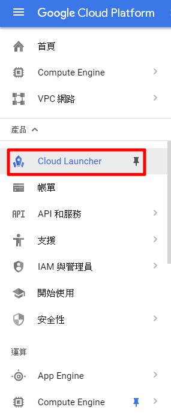
Cloud Launcher 主頁，選擇一個想要的方案，本文章使用 Windows Server 2012 R2 跟 Nginx 2 個例子
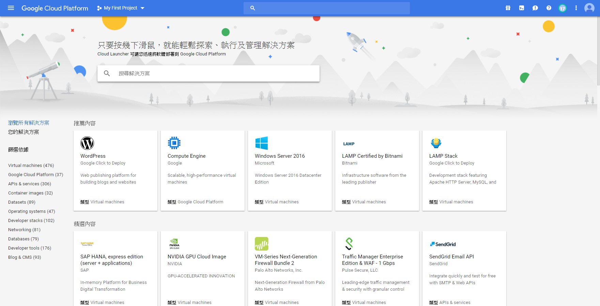
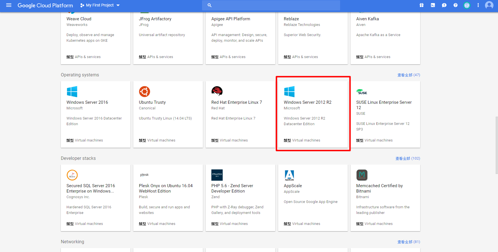
選擇一個 Windows Server 2012 R2 方案，裡面有各種介紹也有使用費用，確定好後點擊 COMPUTE ENGINE 啟動
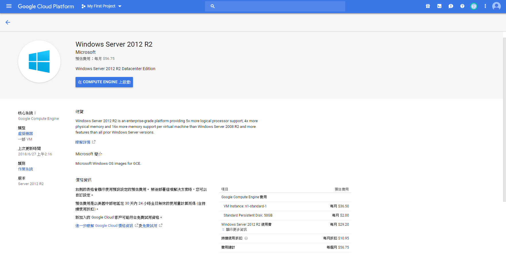
會出現開 VM 的畫面可以做修改
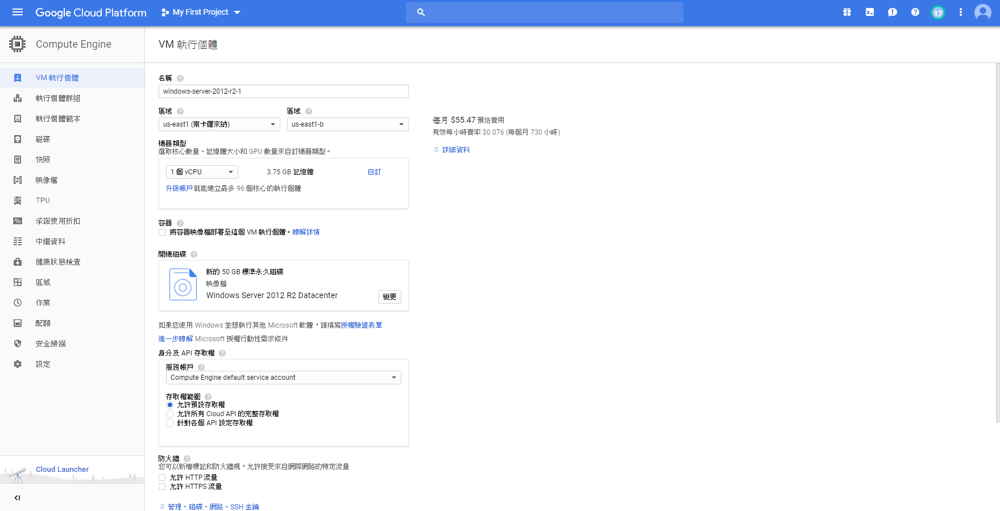
建立後到 VM 個體看就會出現創好的 VM
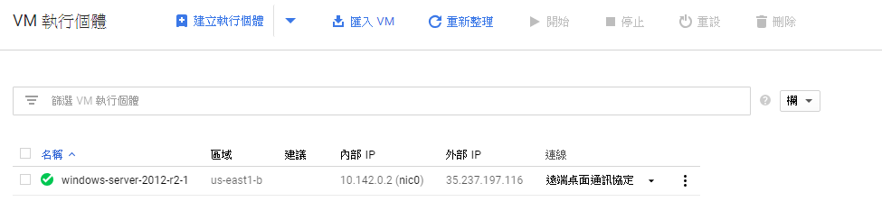
連進去看，恭喜完成！
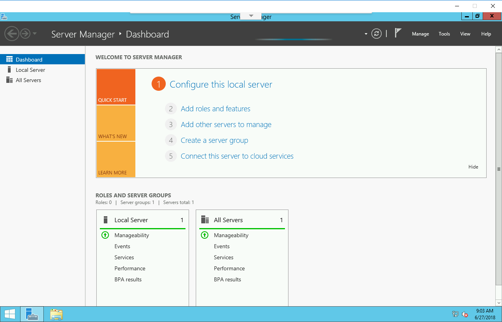
選擇 Nginx 方案，裡面有各種介紹也有使用費用，確定好後點擊 COMPUTE ENGINE 啟動
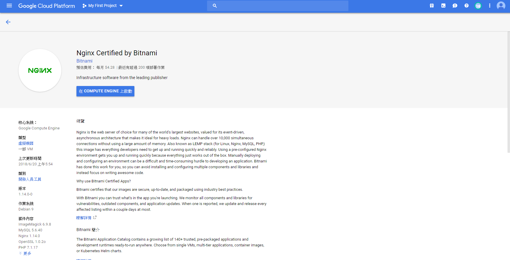
會出現類似開 VM 畫面可以做修改，右邊有列出使用哪些軟體，確定好後點擊下方部署
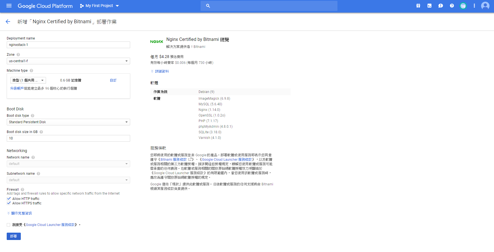
部署會花幾分鐘，好後會出現下圖畫面，做了些甚麼都會顯示在此畫面，
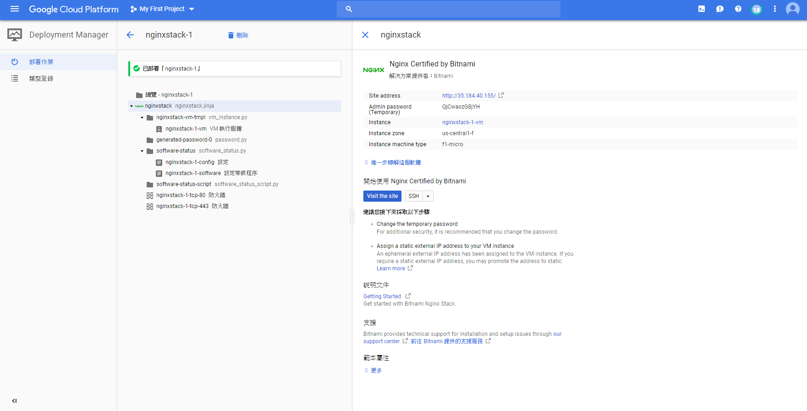
點擊 Visit the site 站點按鈕，在新標籤頁中訪問已部署的 Nginx
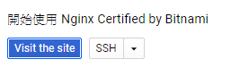
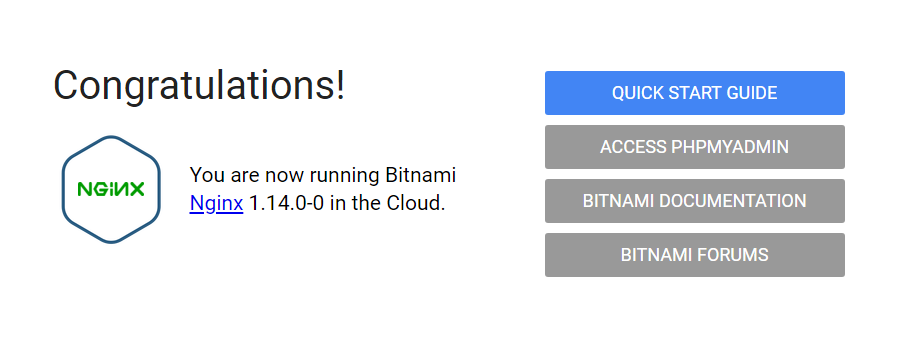
可以到 VM 個體查看，機器已經建好了
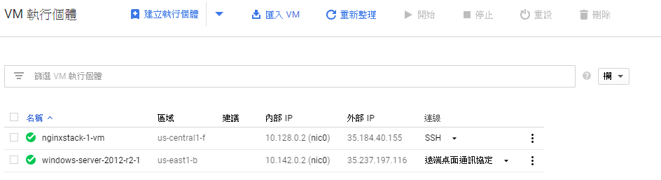